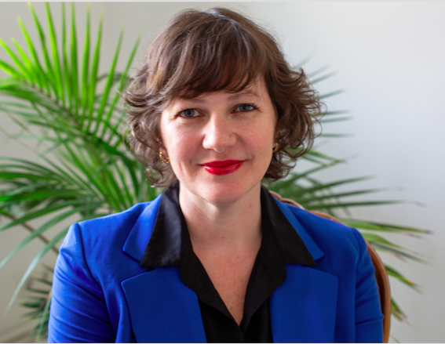

Viviane Hummes
Professora e pesquisadora em Educação Matemática — UFSC
Doutora em Didática da Matemática pela Universitat de Barcelona (UB, Espanha), com bolsa da CAPES para doutorado pleno no exterior, com título reconhecido pela UFRGS como Doutorado em Educação. Realizou pós-doutorado na UB, com bolsa Margarita Salas. Mestra e licenciada em Matemática pela UFRGS.
👩🔬 Quem sou eu?
Sou pesquisadora no campo da Educação Matemática, especialmente em formação de professores e desenvolvimento profissional docente. Minha pesquisa investiga a reflexão sobre a prática pedagógica e as dimensões sociais e políticas do ensino de matemática, articulando critérios de idoneidade didática e lesson study.
Atua na área de Educação Matemática, com ênfase na formação de professores que ensinam matemática e no desenvolvimento profissional docente. Suas pesquisas abordam a reflexão sobre a prática pedagógica e as dimensões sociais e políticas do ensino de matemática, em diálogo com a Educação Matemática Crítica.
🌱 Interesses de pesquisa

Formação acadêmica
Universitat de Barcelona (UB)
Doutorado em Didática da Matemática (CAPES, doutorado pleno no exterior). Título reconhecido pela UFRGS como Doutorado em Educação. Pós-doutorado (bolsa Margarita Salas).
Universidade Federal do Rio Grande do Sul (UFRGS)
Mestrado em Ensino de Matemática. Licenciatura em Matemática.
Projetos
LabForMat
Laboratório de Formação Docente e Pesquisa em Educação Matemática (UFSC).
Reflexão e Prática Docente
Projeto vinculado ao programa Conhecimento Brasil (CNPq).
GEPPROFEM
Grupo de Estudos e Pesquisas em Processos Formativos em Educação Matemática (UFSC).
ICEM
Grupo de Estudos de Insubordinação Criativa em Educação Matemática (UFSC).